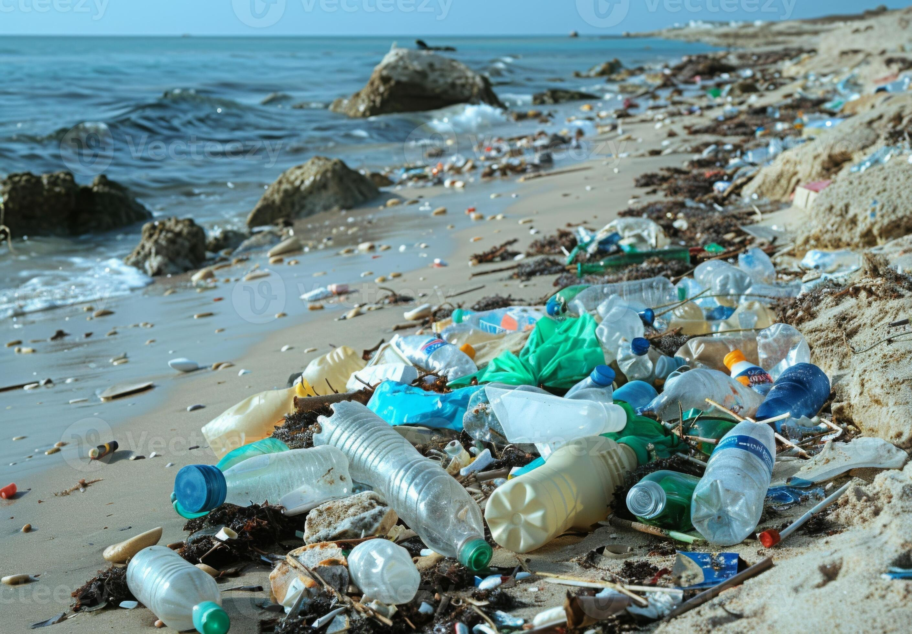
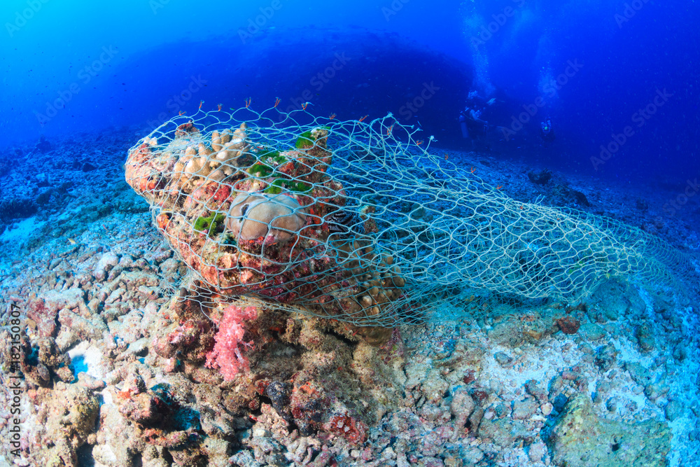
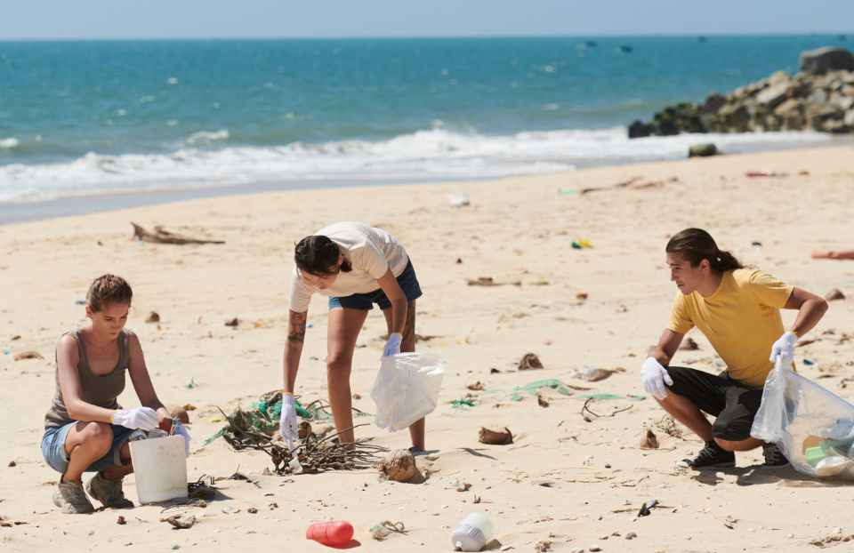

Plastic Pollution & Ocean Waste
Plastic is one of the most revolutionary materials ever invented by humanity — durable, lightweight, and cheap to produce. But these very qualities make it one of the most destructive pollutants ever to enter our oceans. Unlike organic waste, plastic does not biodegrade. It persists in the environment for hundreds to thousands of years, fragmenting into ever-smaller particles that infiltrate every level of the marine food chain.

Single-use plastics accumulate on coastlines and in ocean gyres worldwide.
The Scale of the Problem
Since mass plastic production began in the 1950s, an estimated 8.3 billion tonnes of plastic have been produced globally. Of this, only about 9% has been recycled, 12% incinerated, and the remaining 79% has accumulated in landfills or the natural environment. The ocean bears a disproportionate share of this burden.
Rivers act as conveyor belts, transporting land-based plastic waste to the sea. It is estimated that just 10 rivers — most of them in Asia and Africa — are responsible for carrying approximately 90% of all river-borne plastic into the ocean. Ocean currents then concentrate this debris into massive rotating garbage patches — the largest of which, the Great Pacific Garbage Patch, covers an area estimated at twice the size of Texas.
Of all plastic ever produced has ended up in landfill or the natural environment — including our oceans.
The Hidden Threat: Microplastics
When larger plastic items are exposed to sunlight and wave action, they break into microplastics — particles smaller than 5mm. These are now ubiquitous in the marine environment, found in Arctic sea ice, the deepest ocean trenches, and even in the air we breathe.
Marine organisms from zooplankton to whales ingest microplastics, either mistaking them for food or absorbing them through filter feeding. Microplastics carry adsorbed toxic chemicals including persistent organic pollutants and heavy metals, which accumulate in fatty tissue and magnify in concentration as they move up the food chain — a process called biomagnification. Studies have now detected microplastics in human blood, breast milk, and placental tissue.
Primary vs. Secondary Microplastics
- Primary: Manufactured at microscopic size — microbeads in cosmetics, pellets (nurdles) used in plastic production, fibres from synthetic clothing
- Secondary: Result from the breakdown of larger plastic items — bottles, bags, fishing nets, packaging
Ghost Gear: The Invisible Killer
Abandoned, lost, or discarded fishing gear — collectively known as ghost gear — is considered the most harmful form of marine plastic debris. Ghost nets continue to fish indefinitely, entangling and drowning marine mammals, sea turtles, sharks, and seabirds in a cycle called ghost fishing.
The Global Ghost Gear Initiative estimates that approximately 640,000 tonnes of fishing gear is lost or abandoned in the ocean every year. A single abandoned net can persist for decades, drifting across ocean basins and killing marine life throughout its journey.

Ghost gear entangles and kills marine animals long after it is abandoned by fishing vessels.
Solutions: Turning the Tide on Plastic
Policy Interventions
- The UN Global Plastics Treaty, currently being negotiated, aims to create a legally binding international agreement to reduce plastic production, improve waste management, and fund clean-up in developing nations
- The EU's Single-Use Plastics Directive has already banned ten of the most common marine litter items found on European beaches
- Extended Producer Responsibility (EPR) schemes require manufacturers to fund the end-of-life management of their products
Technological Innovations
- The Ocean Cleanup project deploys passive floating barriers in the Great Pacific Garbage Patch
- Enzymatic bioreactors are being developed to break down PET plastics using naturally occurring bacteria
- Biodegradable alternatives made from seaweed, mycelium, and agricultural waste are entering the market
What You Can Do Right Now
- Carry a reusable bag, bottle, and coffee cup to eliminate daily single-use plastic
- Switch to solid shampoo bars and plastic-free toiletries to reduce bathroom plastic waste
- Wash synthetic clothes in a Guppyfriend bag to capture microplastic fibres
- Participate in or organise a local beach or river clean-up
- Contact your local representative to support plastic reduction legislation
- Support brands that use certified recycled materials and have genuine take-back programmes

Community beach clean-ups remove plastic before it breaks into harmful microplastics.